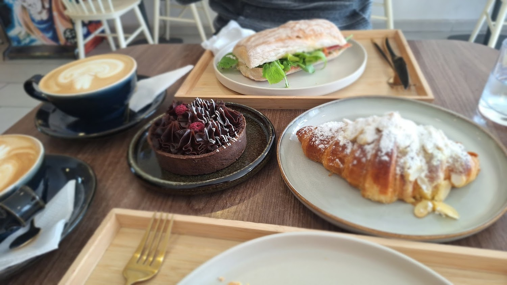
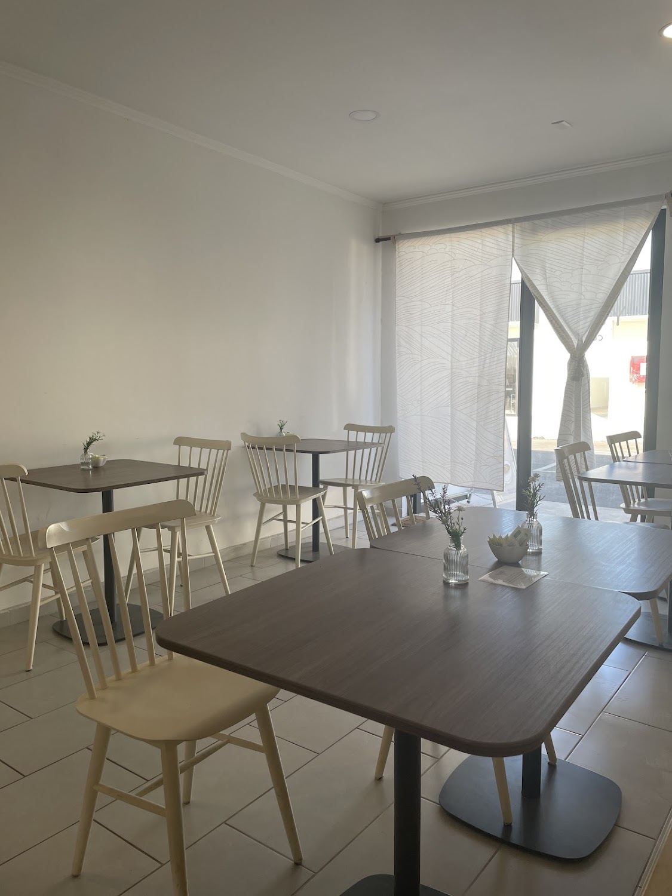
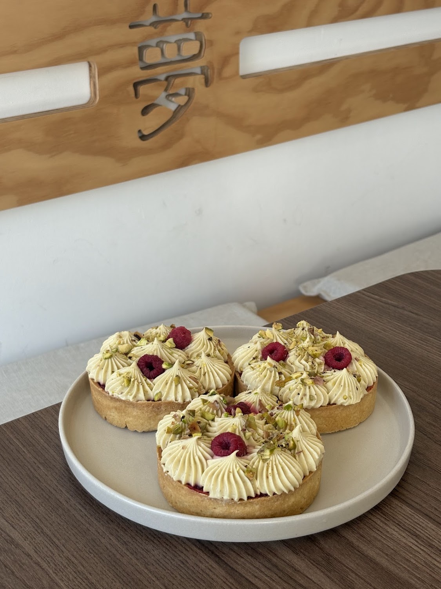
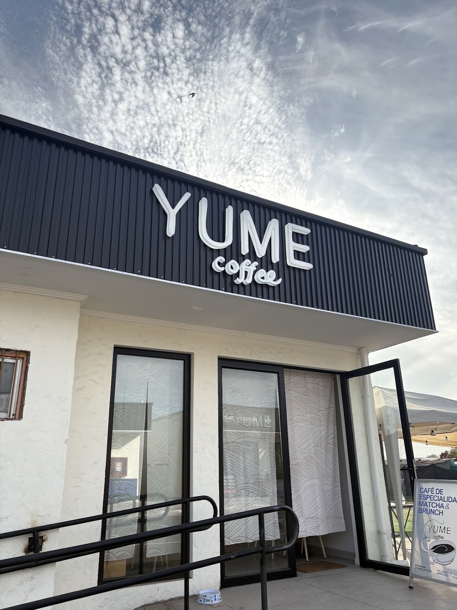

El matcha de la casa
"El mejor matcha que he probado" — lo dejó escrito un cliente en Google, y el matcha es una de nuestras palabras más repetidas.

Café de especialidad · Matcha & brunch · Calera de Tango
Café de especialidad, matcha y brunch en Av. Calera de Tango, paradero 7. Con juegos de mesa, máquina arcade y las mejores 104 opiniones que se pueden tener.
104 personas han opinado en Google y el promedio sigue siendo 5.0. No es fácil de conseguir.
"El mejor matcha que he probado" — lo dejó escrito un cliente en Google, y el matcha es una de nuestras palabras más repetidas.
Café de especialidad y pasteles son los dos temas que más aparecen en nuestras reseñas. Tartaletas de pistacho y frambuesa, croissants, ciabattas.
"Excelente ambientación, cuentan con juegos de mesa y una máquina arcade".
夢 (yume) es "sueño" en japonés — y está tallado en el panel de madera del salón. Es una cafetería de especialidad con matcha, brunch, pastelería propia, juegos de mesa y una máquina arcade.
Tienen 5.0 estrellas con 104 opiniones: el promedio perfecto con volumen real, algo que casi ningún local consigue. También organizan eventos — una reseña cuenta de un flower bar con reserva que estaba "todo muy organizado".
Somos un lugar amigable con LGBTQ+ y un emprendimiento de mujer.



Arma tu pedido y consúltanos. Según el dato que Google recoge de 47 clientes, el gasto promedio va entre $5.000 y $10.000 por persona.
"Uno de los mejores lugares que hemos ido. Desde el momento uno la atención fue muy personalizada y estaban atentos a cada detalle. Fuimos precisamente al evento flower bar con una reserva y estaba todo muy organizado."
"Hoy es la tercera vez que fui a comer y todo, como siempre, maravilloso y súper recomendado. La atención al cliente increíble, muy amables todos, preocupadas de que todo esté en buen estado y sea muy rico."
"Muy delicioso todo, buena atención y excelente ambientación. ¡Cuentan con juegos de mesa y una máquina arcade!"
Av. Calera de Tango, paradero 7
Calera de Tango, Región Metropolitana
—